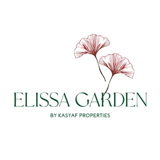

Ucapan Pengarah
Ustaz Zubir Shah bin Omar
Pengarah SRITI Negeri Selangor
Ucapan dan Pembentangan Laporan Perjalanan Sedekad SRITI
MAJLIS MAKAN MALAM
SRITI SELANGOR
2016–2025
Sedekad Membina Generasi Rabbani Murabbi
28 NOVEMBER 2026|SABTU|8.00 MALAM
Regent Hall, Elissa Garden @ TBG
10 Tahun Membina Generasi
Butiran Majlis
Sepuluh tahun SRITI Selangor mendidik anak bangsa dengan acuan Islam. Malam ini kita meraikan perjalanan itu bersama warga pendidik, pengurusan sekolah dan rakan strategik.
Pendaftaran dibuka 7.00 malam. Solat Maghrib di Surau Elissa Garden.
— 1 —Sabtu, 28 November 2026
Solat Maghrib di Surau Elissa Garden
Ustaz Zubir Shah bin Omar, Pengarah SRITI Negeri Selangor
Ustaz Mohd Sukri bin Omar, Ketua Pemuda Dewan Pemuda PAS Negeri Selangor
Bersama nyanyian Lagu Rasmi Sedekad Bersamamu
Diiringi kibaran bendera kecil
Atur cara tertakluk kepada perubahan tanpa notis.
— 2 —Barisan Ucapan
Ucapan Pengarah
Pengarah SRITI Negeri Selangor
Ucapan dan Pembentangan Laporan Perjalanan Sedekad SRITI
Ucapan Perasmian
Ketua Pemuda, Dewan Pemuda PAS Negeri Selangor
Ucapan Perasmian
Penampilan Khas
8.15 malam
10.10 malamLagu Rasmi Sedekad Bersamamu
Detik Bersejarah
Pelancaran rasmi sambutan sepuluh tahun SRITI Selangor.
Imbasan perjalanan SRITI Selangor dari 2016 hingga 2025.
Sekalung Budi
Penghargaan
Kepada tetamu kehormat, warga pendidik, pengurusan sekolah, ibu bapa dan rakan strategik yang menyokong perjalanan sepuluh tahun SRITI Selangor. Semoga sambutan ini menjadi titik tolak kepada dekad seterusnya.
Tempat Majlis

10 Tahun Membina Generasi
Majlis diakhiriNyanyian Lagu SRITI dan Lagu Sedekad Bersamamu bersama kibaran bendera kecil. Sila kekal di tempat duduk hingga majlis ditutup.